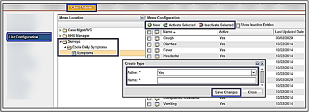

Below you will find the answers to some frequently asked questions about the ReadySet Coronavirus module.
Adding COVID-19 Symptoms to the 21-Day Symptom Tracker

Contact your account representative to setup an email notification to key personnel when a worker indicates fever or symptoms.
We are accepting your feedback via the “Improve ReadySet” button in the upper right corner of the ReadySet application. Our product team will evaluate all requests and based on market demand, will incorporate them into upcoming feature releases. This includes all survey and charting form suggestions.